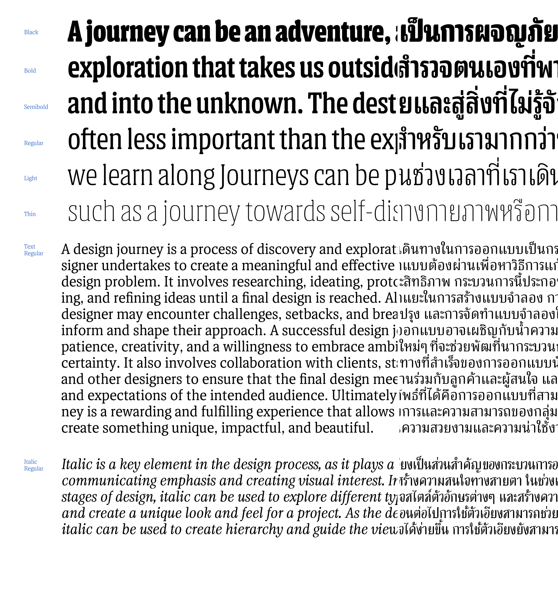
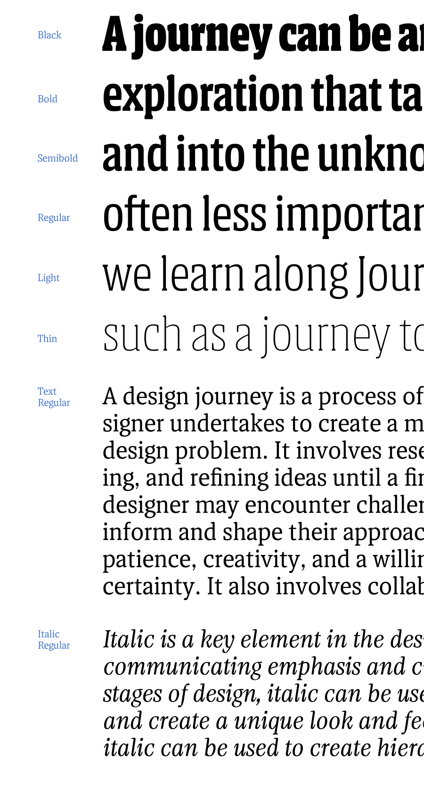
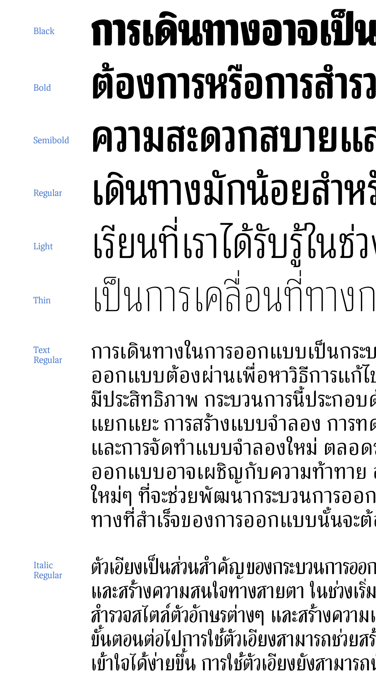
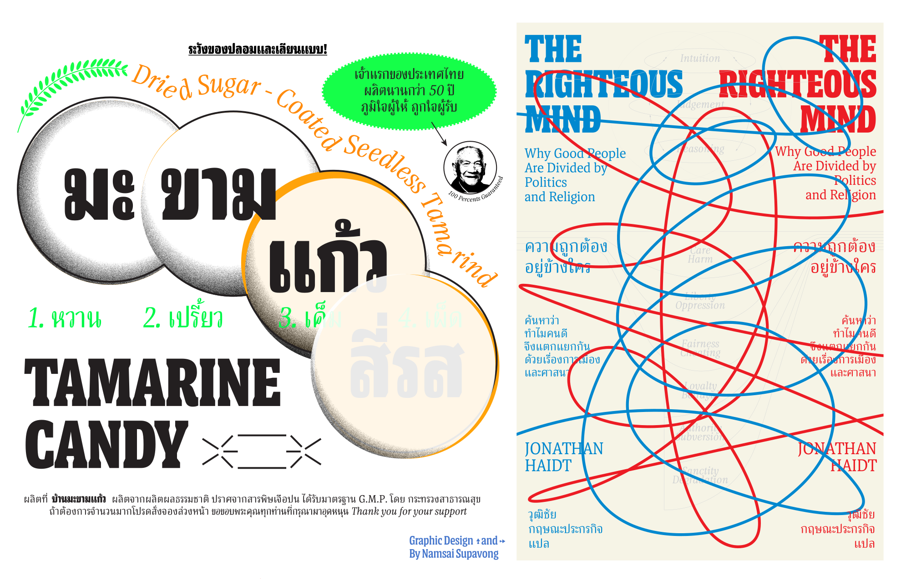
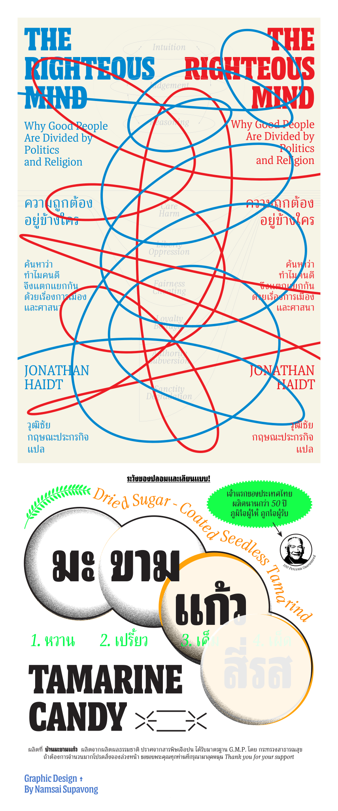
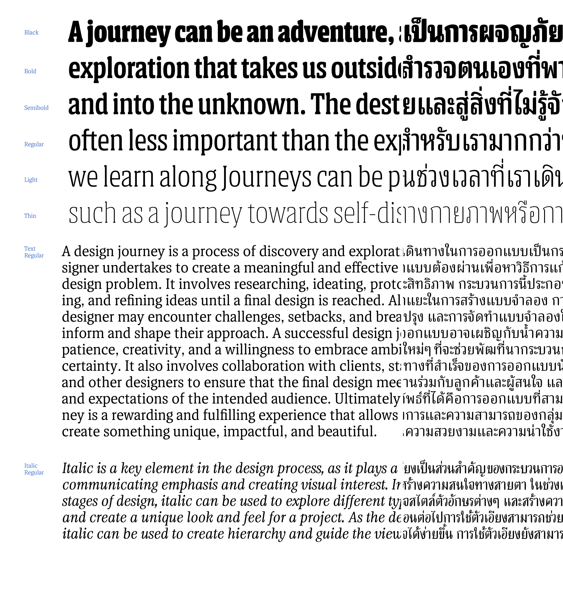
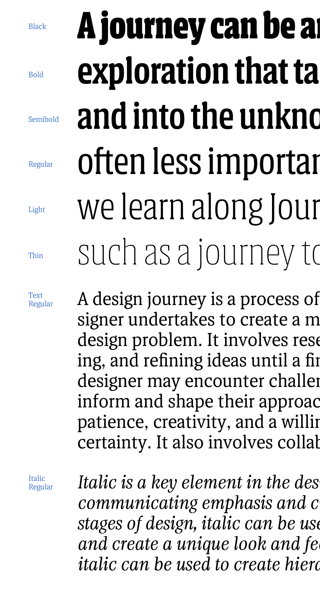
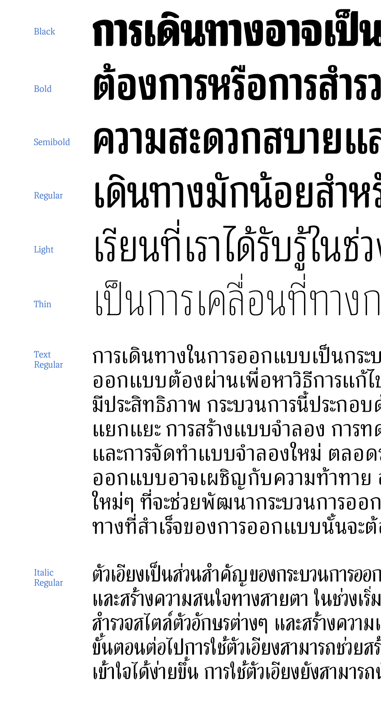
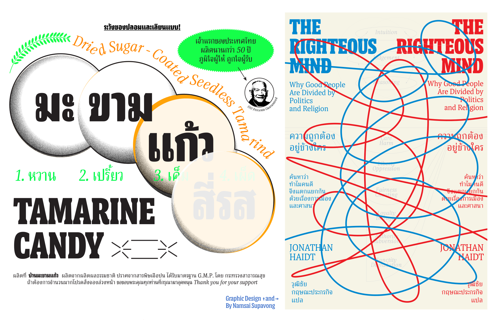
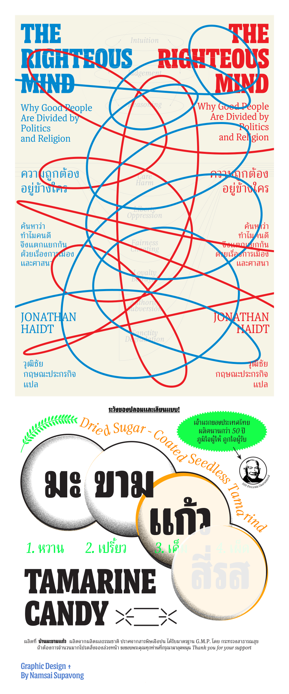

Crushual
CCrushual is a bi-script Latin-Thai typeface intended for exploring the possibility between Thai and Latin. Both scripts were drawn simultaneously, attempting to share the same visual language in design, texture, and typographic usage while not appearing peculiar to their native readers. The initial plan was to research and develop the Thai loop constraint and its Latin counterpart.
The low-contrast condensed black display explores the limitation between the Thai loop restrictions and Latin serif construction; based on this style, the body text and the italics followed.
Notably, most Thai typefaces use slanted Thai instead of cursive construction. Is it not commonly used because it is not the norm? Thus, I used this typeface to experiment with a Thai cursive construction. Thai’s italic is based on fast handwriting rather than elegant calligraphy to reduce the text’s formality and create the distinction between roman and italic. The broken lines and crisp design were also applied to Latin.
Crushual has a long way to go in terms of expanding its weight and width. This is only the beginning of the family’s journey.
Boom, Promphan Suksumek
Boom, Promphan Suksumek is a Thai-Latin type designer. Boom is originally from Bangkok, Thailand. Boom holds a BA in Communication Design from Chulalongkorn University in Bangkok, Thailand. After working as a freelance graphic designer in Thailand, she decided to pursue a Master in Visual Communication at the Basel School of Design in Switzerland, where she found her passion for Type Design. After her MA, she worked as a Type Designer at Cadson Demak, in Bangkok, Thailand, for 3 years. Then she pursued her type design study at Type Media from 2021-2022. And now she is an independent type designer.
Overview
 









Process
Crushual aims to explore the possibilities between Thai and Latin. This project’s design process could be interpreted as a continuous attempt at testing the waters. I was asking myself “Is it possible to…” again and again.
The first question raised in Febuary, I searched for a display idea: “Is it possible to design a playful typeface that works nicely in both Thai and Latin?”. After playing around with reversing the contrast of the brush, I found a design I liked and could derive into multiple weights.
Then, I asked myself a second question “Is it possible to make it condensed?” I tried condensing the design in both scripts, with and without applying the contrast. In the meantime, a third question popped up: “Is it possible to design Thai along with Latin in the script style?” Since Thai originally is not connected, I sketched disconnected script styles in March.
After having explored multiple styles, I was wondering “How to make make it into a type family?” and “Is it possible to make a type family for display, text, and italic?”
Of course, for Latin this is obvious. But when I thought about Thai, I encountered so many challenges. If I kept Thai as it was in high contrast for the display, I can see that it would not be a problem to go bold or thin. However, when I was working in the low-contrast Thai for body text, I asked myself what kind of loop size and form to use? To make the decision, I did some small sketches to explore the different thicknesses, sizes, and the design of the loop counters.
I came to a conclusion, which is not so surprising, that Looped Thai in Black weight has to have some limits in thickness if I would like to remain in the condensed width. I considered this was a good challenge to pair it with a Latin slab serif design. It gave me some joy and anxiety to work on both together.
The looped Thai style has a lot of spacing difficulties since it cannot be as condensed as the Latin can be. So the Latin in Crushual has not been designed as condensed as it could be, for both scripts to share the same texture. In the design of the body text, the letters were drawn with higher contrast to make room for bolder weights (in the future) and to maintain the legibility of Thai loops in small size.
The italic stlye is the newest exploration. In Thai, italic is not commonly used. True italic usually appears in religious contexts. Therefore, making true italic in this typeface could change the voice from “casual” to “formal.” So one way of my exploration is to apply the idea of fast handwriting to Thai and Latin instead of slanted Thai. I still keep the Thai upright for now to see how it will be used, and who knows if the upright Thai italic today can become a playful true italic in the future.
Overall, Crushual was my visual exploration to study the design of both Latin and Thai scripts. The hypotheses I came up with, and the solutions I found are personal, and just one way of interpreting the relationship between these scripts. Asking yourself a question and visually exploring it after is a fun design process. Anyone whom might follow the same questions as mine will be able to come up with their own unique result.